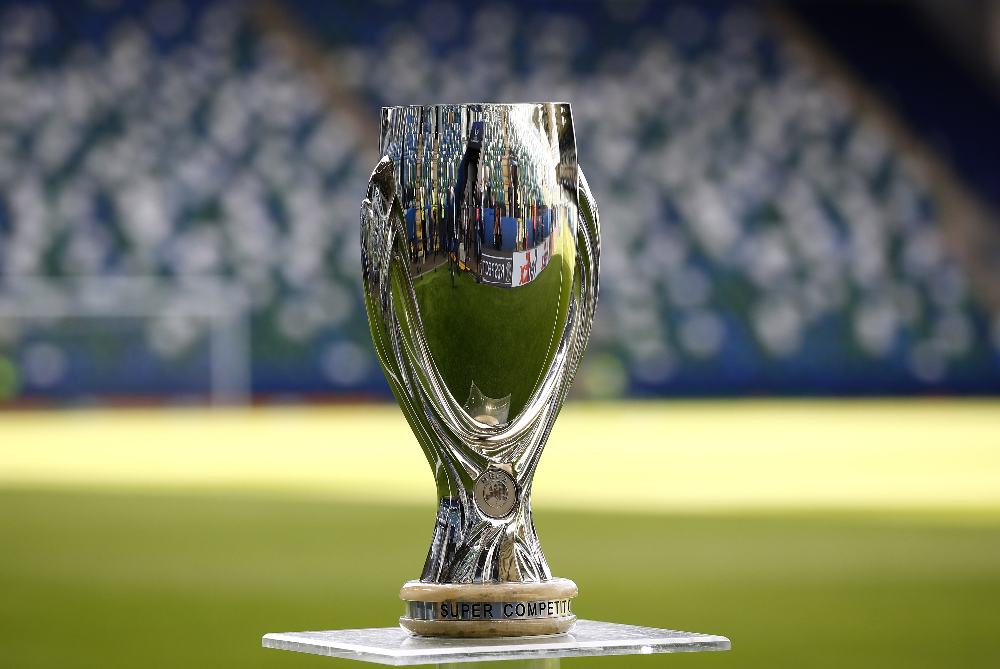

SUPERCOPA UEFA

La Supercopa UEFA es una competición continental de clubes organizada por la UEFA que enfrenta a los campeones de las dos máximas competiciones continentales de Europa: la Liga de Campeones y la Europa League.
RANKING DE MAXIMOS GANADORES
| EQUIPO | LIGAS |
|---|---|
| Real Madrid (ESP) | 5 |
| Barcelona (ESP) | 5 |
| Milan (ITA) | 5 |
| Liverpool (ING) | 4 |
| Atletico Madrid (ESP) | 3 |
| Bayern Munich (ALE) | 2 |
| Chelsea (ING) | 2 |
| Ajax (HOL) | 2 |
| Juventus (ITA) | 2 |
| Anderlecht (BEL) | 2 |
| Valencia (ESP) | 2 |
| Sevilla (ESP) | 1 |
| Porto (POR) | 1 |
| Manchester United (ING) | 1 |
| Dinamo Kiev (RUS) | 1 |
| Nottingham Forest (ING) | 1 |
| Aberdeen (ESC) | 1 |
| Steua Bucarest (RUM) | 1 |
| Melchelen (BEL) | 1 |
| Aston Villa (ING) | 1 |
| Parma (ITA) | 1 |
| Lazio (ITA) | 1 |
| Galatasaray (TUR) | 1 |
| Zenit (RUS) | 1 |
TODOS LOS GANADORES
| AÑO | EQUIPO |
|---|---|
| 2022 | Real Madrid (5) |
| 2021 | Chelsea (2) |
| 2020 | Bayern Munich (2) |
| 2019 | Liverpool (4) |
| 2018 | Atletico Madrid (3) |
| 2017 | Real Madrid (4) |
| 2016 | Real Madrid (3) |
| 2015 | Barcelona (5) |
| 2014 | Real Madrid (2) |
| 2013 | Bayern Munich (1) |
| 2012 | Atletico Madrid (2) |
| 2011 | Barcelona (4) |
| 2010 | Atletico Madrid (1) |
| 2009 | Barcelona (3) |
| 2008 | Zenit (1) |
| 2007 | Milan (5) |
| 2006 | Sevilla (1) |
| 2005 | Liverpool (3) |
| 2004 | Valencia (2) |
| 2003 | Milan (4) |
| 2002 | Real Madrid (1) |
| 2001 | Liverpool (2) |
| 2000 | Galatasaray (1) |
| 1999 | Lazio (1) |
| 1998 | Chelsea (1) |
| 1997 | Barcelona (2) |
| 1996 | Juventus (2) |
| 1995 | Ajax (2) |
| 1994 | Milan (3) |
| 1993 | Parma (1) |
| 1992 | Barcelona (1) |
| 1991 | Manchester United (1) |
| 1990 | Milan (2) |
| 1989 | Milan (1) |
| 1988 | Melchelen (1) |
| 1987 | Porto (1) |
| 1986 | Steua Bucarest (1) |
| 1984 | Juventus (1) |
| 1983 | Aberdeen (1) |
| 1982 | Aston Villa (1) |
| 1980 | Valencia (1) |
| 1979 | Nottingham Forest (1) |
| 1978 | Anderlecht (2) |
| 1977 | Liverpool (1) |
| 1976 | Anderlecht (1) |
| 1975 | Dinamo Kiev (1) |
| 1973 | Ajax (1) |